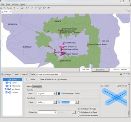
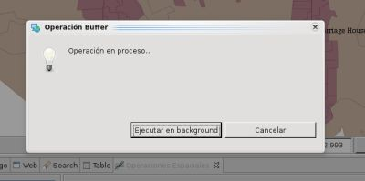
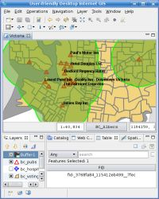
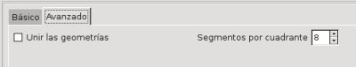

Operación Buffer
Calcula un área buffer alrededor de las geometrías seleccionadas.
La Operación Buffer toma los features de una capa fuente de tipo vector y crea a su alrededor un area buffer de una distancia especificada, almacenando el resultado en una Capa Resultado.
Si la Capa Fuente tiene features seleccionados, la operación será realizada contra ellos, de lo contrario, serán utilizados los features de toda la capa.
La Capa Fuente no se modifica bajo ningún concepto. Una nueva Capa Resultado se crea por defecto, o el usuario puede especificar un capa vector existente y editable donde almacenar los resultados.
Ejemplo de Uso
|
Ir a la Vista de Operaciones Espaciales, y seleccionar Buffer en el menú de Operaciones.
Aparecerán las opciones de entrada específicas de la Operación Buffer.
- Seleccionar la Capa Fuente
En la lista desplegable de Capa Fuente, seleccionar la Capa de la que quiere crear el area buffer. Por defecto, se seleccionará la Capa actualmente seleccionada en la Vista de Capas.
- Seleccionar la Capa Resultado
La lista desplegable de Capa Resultado contendrá un nombre de capa propuesto para la Capa a ser creada para albergar los resultados de la operación. Puede dejarlo como está, escribir otro nombre de Capa, o seleccionar una Capa existente en la lista desplegable de Capa Resultado. En el último caso, el resultado de la operación será almacenado en la Capa seleccionada.
- Establecer Distancia y Unidades
En la sección de Opciones, especificar el valor escalar para el cálculo del ancho del area del buffer alrededor de los Features fuente, y seleccionar en qué unidad de medida se debe considerar el ancho del buffer. Puede elegir entre las unidades actuales del Mapa, las del Layer o incluso elegir otra unidad de medida de la lista de Unidades.
- Realizar la operación
Presione el botón Ejecutar de la barra de herramientas de la Vista y la operación dará comienzo.

Figura 1. Interfaz de usuario de la Operación Buffer
Una vez haya presionado el botón Ejecutar, el progreso de la operación se mostrará en un diálogo de proceso, como se muestra en la Figura 2. La operación puede llevar un rato en completarse, dependiendo del número y complejidad de la geometrías de entrada.

Figura 2. Dialogo de Progreso
|
Una vez que finaliza la Operación, si se creó una nueva Capa para almacenar el resultado, será automáticamente añadida al Mapa actual.
La Figura 3 muestra la nueva Capa creada (Buffer-1, en verde) añadida al mapa, con un Feature cuya geometría es el resultado agregado de aplicar el buffer especificado a las geometrías por defecto en los Features fuente.
|

Figura 3. Capa Resultado
Opciones Avanzadas
La Operación Buffer contiene varias opciones avanzadas que se pueden establecer para controlar ciertos aspectos del proceso.
Por ejemplo, la Figura 4 muestra los controles para las opciones avanzadas de Unir las geometrías y Segmentos por cuadrante.

Figura 4. Opciones Avanzadas
|
- Unir las geometrías
La opción Unir las geometrías controla si se debe crear una única geometría agregada para todo el conjunto de Features fuente, o si por el contrario se debe crear un nuevo Feature en la Capa Resultado por cada Feature fuente. Por defecto, esta opción está marcada y por lo tanto se crea una única geometría agregada. La Figura 5 muestra el resultado (Capa Buffer-2, en rojo) de aplicar el mismo ancho de buffer que en el ejemplo anterior, pero con la opción de Unir las geometrías desmarcada.
- Segmentos por cuadrante
La opción Segmentos por cuadrante permite controlar el número de segmentos rectos que se usarán para redondear la curva resultante. Este parametro afecta a cómo se crean las áreas redondeadas sobre vértices, ya que uDig usa una aproximación lineal de las curvas.
| 
Figura 5. Resultado de la operación con Unir las geometrías desmarcado.
|
(c) Copyright (c) 2004-2008 Refractions Research Inc. and others.
{kind=link}
{kind=link}
{kind=link}
{kind=link}